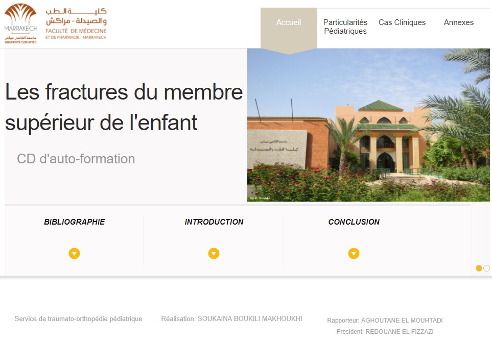

Aide
Ce CD est un outil pédagogique concu pour aider à acquérir une démarche optimal devant les fractures du membre supérieur de l’enfant. Il est déstiné aux étudiants, aux internes, aux résidents, ainsi qu’à tous les médecins amenés à prendre en charge l’enfant traumatisé.
1. Page d’accueil :
Cet écran est accessible à partir du bouton acceuil qui affiche le plan de la thèse. Il est composé d’une partie supérieur contenant les 4 principaux boutons (acceuil, particulatités pédiatriques, cas cliniques, annexes) qui sont visibles sur tous les autres écrans, et d’une partie inférieure contenant 3 boutons accessoires ( introduction, conclusion, bibliographie) accessibles uniquement depuis la page d’acceuil.
 |
2. Structure des rubriques :
La partie “ particularités pédiatriques ” présente 6 chapitres:
“préambule”
“fractures spécifiques de l’enfant”
“ossification du membre supérieur”
“informations à donner aux familles”
“particularités du traitement”
“prise en charge de la douleur”
La partie “ cas cliniques” contient 28 cas cliniques affichées en fonction de la partie traumatisée et organisés selon les diagnostics portés et leurs fréquences.
En cliquant sur une rubrique, les chapitres de celle-ci s’affichent sur le côté gauche de l’écran.
Cette partie détaille les connaissances nécessaires pour la prise en charge d’un enfant traumatisé. Le texte est enrichi de figures qui facilitent sa compréhension, pour les agrandir ou les réduire, il suffit de cliquer par-dessus.
Pour accéder à un cas clinique il suffit de cliquer sur le lien hypertexte, l’énoncé du cas clinique apparaitra avec les questions. Chaque question réfère à la réponse “R” et aux commentaires “C” correspondants.
Pour afficher la figure, la réponse ou le commentaire de la question, cliquez sur "fig", “R” ou “C”. une fenêtre pop-up apparait contenant la figure, la réponse ou le commentaire correspondant. Pour revenir à l’énoncé du cas clinique, cliquez sur le bouton fermer de la fenêtre pop-up.
Le lien “Réf” situé en bas à droite de chaque cas clinique renvoie vers les références. Elles contiennent la source des différents documents utilisés pour la rédaction des commentaires de chaque cas clinique.
La partie “annexes” adjointe au travail, cite les personnes qui ont aidé à la réalisation de ce projet, ainsi que toutes les explications nécessaires pour la bonne utilisation du CD. Elle est faite de 6 volets:
“jury”
“université”
“remerciements”
“dédicaces”
“serment”
“aide”